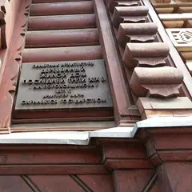
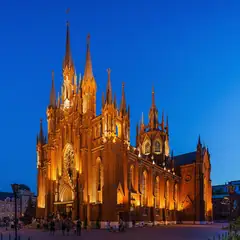
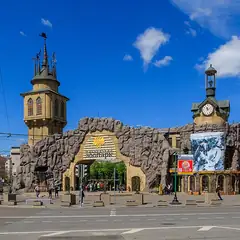
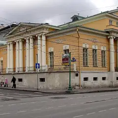
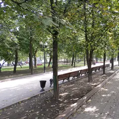
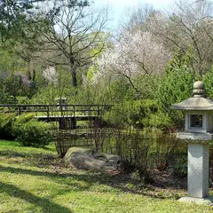
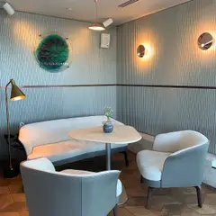
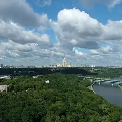

Подборку собрали 24 ноября, прошедшие события скрыты. Свежая афиша — на главной
Подборка · данные на 24 ноября
Куда сходить на свидание в Москве
Здесь 201 план для двоих: прогулка, музей или шоу, а рядом — где поужинать, обычно не дальше 20 минут пешком. 56 планов укладываются примерно в 1 500 ₽ на человека, 87 мы отметили как удачные для первого свидания. Ещё 72 события на ближайшие две недели — концерты, спектакли и выставки, куда удобно сходить вдвоём. Понравился план — нажми «Позвать сюда»: соберётся приглашение-игра, а ответ с днём и временем вернётся к тебе.
- 201 план
- 314 мест
- 72 события
Готовые планы для свидания 24 из 201

- Дом Пороховщикова · Деревянный терем · м. Арбатская
- 7 минут пешкомДом Мельникова · Архитектура
- 9 минут пешкомA-House Cafe · Кафе
Бревенчатый терем среди каменных домов, цилиндры Мельникова с ромбами окон и кофе на Афанасьевском — тихая сторона центра.
Открыть план: Арбатские переулки без АрбатаПозвать сюда: Арбатские переулки без Арбата
Фото: Lite, CC BY-SA 3.0 · Wikimedia Commons
- Особняк Зинаиды Морозовой · Особняк · м. Баррикадная
- 5 минут пешкомПатриаршие пруды · Пруд и сквер
- 4 минуты пешкомThe Bix · Джаз-бар
В сумерках особняк с башнями выглядит особенно загадочно. Оттуда пять минут до пруда и ещё столько же до джаз-бара, где вечер продолжается под живую музыку.
Открыть план: Готика, пруд и джазПозвать сюда: Готика, пруд и джаз
Фото: Vzorets, CC BY-SA 4.0 · Wikimedia Commons

- Собор Непорочного Зачатия · Собор · м. Улица 1905 года
- 1 минута пешкомКафедра · Кофейня
Зайти в неоготический собор посмотреть витражи, а потом минута до тихой кофейни по соседству. Красивое место и спокойный разговор без дороги.
Открыть план: Готический собор и пирогПозвать сюда: Готический собор и пирог
Фото: A.Savin, Free Art License · Wikimedia Commons
- ГЭС-2 · Дом культуры · м. Кропоткинская
- 1 минута пешкомChima · Фудхолл
Выставки в ГЭС-2, а фудхолл Chima совсем рядом на Болотной — каждый выберет свою кухню.
Открыть план: ГЭС-2 и азиатский ужинПозвать сюда: ГЭС-2 и азиатский ужин
Фото: Юрий Д.К., CC BY 4.0 · Wikimedia Commons
- Особняк Зинаиды Морозовой · Особняк · м. Баррикадная
- 5 минут пешкомПатриаршие пруды · Пруд и сквер
- 2 минуты пешкомI love cake · Кондитерская
Рассмотреть неоготический особняк, за четыре минуты дойти до Патриарших и сделать круг у воды, а потом вернуться на десерт в кондитерскую рядом.
Открыть план: Замок на Спиридоновке и прудПозвать сюда: Замок на Спиридоновке и пруд
Фото: Vzorets, CC BY-SA 4.0 · Wikimedia Commons
- Парк «Зарядье» · Парк · м. Китай-город
- 10 минут пешкомСофия · Кофейня
Прогулка по парку и парящему мосту, затем десять минут через реку до кофейни с окнами на Кремль. Виды с обоих берегов за одну встречу.
Открыть план: Зарядье и кофе в колокольнеПозвать сюда: Зарядье и кофе в колокольне
Фото: Alina Vozna, CC BY-SA 4.0 · Wikimedia Commons

- Московский зоопарк · Зоопарк · м. Баррикадная
- 11 минут пешкомКафедра · Кофейня
Погулять среди вольеров, пока светло, и за десять минут дойти до кофейни согреться. Простой план без пафоса, где легко найти темы для разговора.
Открыть план: Зоопарк и тёплая кофейняПозвать сюда: Зоопарк и тёплая кофейня
Фото: A.Savin, Free Art License · Wikimedia Commons
- Музей русского импрессионизма · Музей · м. Белорусская
- 10 минут пешкомОдеон · Гастротеатр
Час в музее на «Большевике», затем семь минут пешком до гастротеатра: ужин уже в билете, а спектакль идёт прямо у вашего столика.
Открыть план: Импрессионисты и ужин-мюзиклПозвать сюда: Импрессионисты и ужин-мюзикл
Фото: Sergey A. Demidov, CC BY 4.0 · Wikimedia Commons
- Клуб имени Русакова · Авангард Мельникова · м. Сокольники
- 12 минут пешкомСокольники · Парк
Три бетонных зуба зрительного зала над Стромынкой, а потом прогулка по аллеям Сокольников.
Открыть план: Клуб-шестерёнка Мельникова и СокольникиПозвать сюда: Клуб-шестерёнка Мельникова и Сокольники
Фото: Ludvig14, CC BY-SA 4.0 · Wikimedia Commons
- Англиканская церковь Святого Андрея · Концертный зал · м. Александровский сад
- 1 минута пешкомCentrale Bistro · Бистро
Слушаете музыку под неоготическими сводами, а ужинать идёте в бистро через минуту ходьбы. Весь вечер умещается в одном тихом переулке.
Открыть план: Концерт в церкви и бистроПозвать сюда: Концерт в церкви и бистро
Фото: salech hcelas, CC BY 3.0 · Wikimedia Commons
- Перезвон · Кофейня в колокольне · м. Третьяковская
- 9 минут пешкомТретьяковка на Кадашёвской · Музей
Капучино под сводами колокольни XVIII века на Пятницкой, потом выставка в Третьяковке на Кадашёвской набережной.
Открыть план: Кофе в колокольне и КадашиПозвать сюда: Кофе в колокольне и Кадаши
Фото здания: Dmitry Ivanov., CC BY-SA 4.0 · Wikimedia Commons
- Смотровая ЦДМ · Смотровая площадка · м. Кузнецкий Мост
- 3 минуты пешкомГранд Кофемания · Ресторан
Встречаете закат на смотровой над центром, спускаетесь и через три минуты садитесь ужинать. Вид даёт тему для разговора, ресторан — время на него.
Открыть план: Крыша ЦДМ и ужин у ЛубянкиПозвать сюда: Крыша ЦДМ и ужин у Лубянки
Фото: A.Savin, CC BY-SA 3.0 · Wikimedia Commons
- Здание Центросоюза · Модернизм Ле Корбюзье · м. Сретенский бульвар
- 2 минуты пешкомKeep · Гастробар
Единственное здание Корбюзье в России — розовый туф и стекло, а потом ужин при свечах в Keep через дорогу.
Открыть план: Ле Корбюзье на МясницкойПозвать сюда: Ле Корбюзье на Мясницкой
Фото: Ludvig14, CC BY-SA 4.0 · Wikimedia Commons
- Особняк Арсения Морозова · Неомавританский особняк · м. Арбатская
- 12 минут пешкомОсобняк Рябушинского · Музей
Ракушки и витые колонны особняка Морозова на Воздвиженке, потом каменная лестница-волна Шехтеля в особняке Рябушинского.
Открыть план: Мавританский замок и лестница-волнаПозвать сюда: Мавританский замок и лестница-волна
Фото: Елена Нечипоренко, CC BY-SA 4.0 · Wikimedia Commons
- Патриарший мост · Пешеходный мост · м. Кропоткинская
- 11 минут пешкомANTIПА · Кафе
С моста открывается панорама реки и центра, а в десяти минутах ходьбы ждёт кафе с тёплой выпечкой, где можно согреться после ветра.
Открыть план: Мост с видом и кофе в переулкеПозвать сюда: Мост с видом и кофе в переулке
Фото: NVO, общественное достояние · Wikimedia Commons
- Особняк Зинаиды Морозовой · Особняк · м. Баррикадная
- 6 минут пешкомДом-музей Чехова · Музей
- 11 минут пешкомMátes · Кофейня
Два дома с историей в пяти минутах друг от друга: снаружи замок Морозовой, внутри скромный быт писателя. После музея — кофе неподалёку, чтобы обсудить увиденное.
Открыть план: Особняк и дом ЧеховаПозвать сюда: Особняк и дом Чехова
Фото: Vzorets, CC BY-SA 4.0 · Wikimedia Commons
- Доходный дом Исакова · Модерн · м. Парк культуры
- 4 минуты пешкомМансуровский переулок · Старый переулок
- 13 минут пешкомДом Бурганова · Музей скульптуры
Волнистый фасад Кекушева, кривой Мансуровский переулок и дворики Бурганова, где бронза стоит среди кирпичных арок.
Открыть план: Пречистенка: волнистый модерн и сад бронзыПозвать сюда: Пречистенка: волнистый модерн и сад бронзы
Фото: Moreorless, CC BY-SA 4.0 · Wikimedia Commons

- Государственный музей Пушкина · Музей · м. Кропоткинская
- 6 минут пешкомFinch · Кафе
Сначала залы музея Пушкина в старой усадьбе, потом пять минут переулками до бистро в доходном доме — сэндвичи и десерт, чтобы обсудить увиденное.
Открыть план: Пушкин на Пречистенке и обедПозвать сюда: Пушкин на Пречистенке и обед
Фото: NVO, CC BY-SA 2.5 · Wikimedia Commons
- Пушкинский музей · Музей · м. Кропоткинская
- 1 минута пешкомANTIПА · Кафе
Пара часов среди картин, а потом минута пешком до светлого кафе с выпечкой: впечатления удобно обсудить сразу, пока они свежие.
Открыть план: Пушкинский и кафе за угломПозвать сюда: Пушкинский и кафе за углом
Фото: Ghirlandajo, CC BY-SA 3.0 · Wikimedia Commons
- Тюфелева роща · Парк · м. ЗИЛ
- 3 минуты пешкомСерый дом · Ресторан
Проходите по парку с длинной перголой и за пару минут оказываетесь у ресторана. Современный парк и нарядный зал хорошо оттеняют друг друга.
Открыть план: Роща и ужин с ШагаломПозвать сюда: Роща и ужин с Шагалом
Фото: A.Savin, Free Art License · Wikimedia Commons
- Введенское кладбище · Некрополь · м. Лефортово
- 20 минут пешкомЛефортовский парк · Парк
Сначала тихие аллеи с готическими надгробиями, затем минут пятнадцать пешком до парка с прудами и плотинами. Долгая прогулка, в которой хватает времени на разговор.
Открыть план: Склепы и старый парк ЛефортоваПозвать сюда: Склепы и старый парк Лефортова
Фото: Никонико962, CC BY-SA 4.0 · Wikimedia Commons
- Дом Бурганова · Музей скульптуры · м. Кропоткинская
- 1 минута пешкомFinch · Кафе
Сначала дворик и залы музея скульптуры, потом минута пешком по тому же переулку до кафе — сырники и сэндвичи, пока обсуждаете увиденное.
Открыть план: Скульптуры Бурганова и поздний завтракПозвать сюда: Скульптуры Бурганова и поздний завтрак
Фото: Apr1, CC BY-SA 4.0 · Wikimedia Commons
- Клуб имени Зуева · Конструктивизм · м. Белорусская
- 9 минут пешкомКультурный код · Кафе
Конструктивизм Голосова: вечером стеклянная лестница светится изнутри. Перед этим — кофе в «Культурном коде» на Чаянова.
Открыть план: Стеклянный цилиндр клуба ЗуеваПозвать сюда: Стеклянный цилиндр клуба Зуева
Фото: Guldfisken, CC BY-SA 3.0 · Wikimedia Commons
- Школа драматического искусства · Театр · м. Сухаревская
- 6 минут пешкомСДВиГ · Бар
Спектакль, затем пять минут пешком до спрятанного во дворе бара с мягким светом и рамёном. Удобно продолжить разговор о постановке.
Открыть план: Театр на Сретенке и бар-лофтПозвать сюда: Театр на Сретенке и бар-лофт
Фото: Brateevsky, CC BY-SA 4.0 · Wikimedia Commons


Места, куда зовут на свидание 18 из 314
Большой Афанасьевский пер., 14
Новое
Кафе при «Доме предпринимателей» у Кропоткинской: завтраки в любое время, сырники, каши, сэндвичи и витрина с выпечкой и печеньем.
Подробнее и маршрут: FinchПозвать сюда: Finch
Фото здания: Александр Сигачёв, CC BY-SA 4.0 · Wikimedia Commons
Театральная пл., 1
Главная сцена страны. Билеты продаются на сайте театра — следите за открытием продаж.
Подробнее и маршрут: Большой театрПозвать сюда: Большой театр
Фото: Юрий Д.К., CC BY 4.0 · Wikimedia Commons
Гоголевский бул.
Тенистый бульвар от Арбатской площади к Храму Христа Спасителя.
Подробнее и маршрут: Гоголевский бульварПозвать сюда: Гоголевский бульвар
Фото: Alina Vozna, CC BY-SA 4.0 · Wikimedia Commons
Красная площадь
Главная площадь страны: Кремль, Василий Блаженный, ГУМ и Исторический музей в одном кадре.
Подробнее и маршрут: Красная площадьПозвать сюда: Красная площадь
Фото: mos.ru, CC BY 4.0 · Wikimedia Commons
ул. Спиридоновка, 17
Новое
Неоготический особняк, похожий на английский замок, с интерьерами по эскизам Врубеля; красивая точка для прогулки по Спиридоновке.
Подробнее и маршрут: Особняк Зинаиды МорозовойПозвать сюда: Особняк Зинаиды Морозовой
Фото: Vzorets, CC BY-SA 4.0 · Wikimedia Commons
Большой Патриарший пер.
Пруд из «Мастера и Маргариты»: скамейки, кафе вокруг, зимой — каток.
Подробнее и маршрут: Патриаршие прудыПозвать сюда: Патриаршие пруды
Фото: Dimа, CC BY-SA 3.0 · Wikimedia Commons
Патриарший мост
Пешеходный мост от Храма Христа Спасителя к «Красному Октябрю» с открыточным видом на Кремль.
Подробнее и маршрут: Патриарший мостПозвать сюда: Патриарший мост
Фото: NVO, общественное достояние · Wikimedia Commons

Чистопрудный бул.
Бульвар с прудом: летом лодки и лебеди, зимой каток. Рядом Меншикова башня.
Подробнее и маршрут: Чистые прудыПозвать сюда: Чистые пруды
Фото: SergeyStepykin, CC BY-SA 3.0 · Wikimedia Commons

Ботаническая ул., 4
Японский сад в Ботаническом: пагода, водопады и сакура весной. Вход платный.
Подробнее и маршрут: Японский садПозвать сюда: Японский сад
Фото: Carbonkidka, CC BY-SA 4.0 · Wikimedia Commons
Пресненская наб., 8, стр. 1
Ресторан в Москва-Сити с панорамной террасой, зеленью и фонтанами.
Подробнее и маршрут: Bamboo.BarПозвать сюда: Bamboo.Bar
Фото: BpbAlonka, CC BY-SA 3.0 · Wikimedia Commons

Страстной бул., 8А
Две звезды Michelin 2021
Фермерские продукты и вид на центр с седьмого этажа.
Подробнее и маршрут: Twins GardenПозвать сюда: Twins Garden
Фото: Tamara Ivanova-Issayeva, CC BY-SA 4.0 · Wikimedia Commons
Александровский сад
Сад вдоль Кремлёвской стены: Вечный огонь, Итальянский грот и смена почётного караула.
Подробнее и маршрут: Александровский садПозвать сюда: Александровский сад
Фото: Надежда Пивоварова, CC BY-SA 3.0 · Wikimedia Commons
Вознесенский пер., 8/5, стр. 3
Новое
Неоготическая церковь в переулке у Тверской, где регулярно идут концерты. Рядом сквер с ротондой и фонтаном — удобно совместить с прогулкой.
Подробнее и маршрут: Англиканская церковь Святого АндреяПозвать сюда: Англиканская церковь Святого Андрея
Фото: salech hcelas, CC BY 3.0 · Wikimedia Commons
ул. Арбат
Старейшая пешеходная улица: уличные музыканты, художники, Стена Цоя и квартира Пушкина.
Подробнее и маршрут: АрбатПозвать сюда: Арбат
Фото: Alex 'Florstein' Fedorov, CC BY-SA 4.0 · Wikimedia Commons

ул. Косыгина, смотровая площадка
Лесистый склон над Москвой-рекой. У главного здания МГУ — смотровая с видом на Лужники и Сити.
Подробнее и маршрут: Воробьёвы горыПозвать сюда: Воробьёвы горы
Фото: Niklitov, CC BY-SA 4.0 · Wikimedia Commons
ул. Пречистенка, 12/2
Главный пушкинский музей в усадьбе Хрущёвых на Пречистенке.
Подробнее и маршрут: Государственный музей ПушкинаПозвать сюда: Государственный музей Пушкина
Фото: NVO, CC BY-SA 2.5 · Wikimedia Commons
Болотная наб., 15
Бывшая электростанция напротив Кремля: выставки, кино и бар у входа. Вход бесплатный по регистрации на сайте, 11:00–22:00.
Подробнее и маршрут: ГЭС-2Позвать сюда: ГЭС-2
Фото: Юрий Д.К., CC BY 4.0 · Wikimedia Commons
Большой Афанасьевский пер., 15, стр. 9
Новое
Музей скульптора в старых домах у Арбата: два внутренних дворика и сад, где бронза стоит среди кирпичных стен и арок, плюс подземные залы. Лучше в солнечный день.
Подробнее и маршрут: Дом БургановаПозвать сюда: Дом Бурганова
Фото: Apr1, CC BY-SA 4.0 · Wikimedia Commons


Куда сходить вдвоём в ближайшие две недели 8 из 72
Театр Наций · м. Пушкинская · от 1 500 ₽ · 18+
Робер Лепаж ставит Булгакова с технологичными чудесами на сцене, Мастера играет Евгений Миронов. Только четыре вечера подряд в конце ноября, начало в 18:00.
Подробнее: Мастер и МаргаритаПозвать сюда: Мастер и МаргаритаБилеты : Мастер и Маргарита (страница с билетами, откроется в новой вкладке)
Фото: Mike1979 Russia, CC BY-SA 3.0 · Wikimedia Commons
Театр Моссовета, Основная сцена · м. Маяковская · 500–5 000 ₽ · 12+
Музыкальный спектакль по рок-опере Уэббера и Райса идёт в Театре Моссовета с 1990 года — один из самых долгоживущих хитов Москвы. 2,5 часа с антрактом.
Подробнее: Иисус Христос — суперзвездаПозвать сюда: Иисус Христос — суперзвездаБилеты : Иисус Христос — суперзвезда (страница с билетами, откроется в новой вкладке)
ЦСИ AZ/ART · м. Китай-город · 0+
Скульптура оттепели в 43 работах: Эрнст Неизвестный, группа ЛЕСС и их современники — и бунтари, и официальные мастера. Небольшая выставка на Маросейке.
Подробнее: Они были разными. Скульптура оттепелиПозвать сюда: Они были разными. Скульптура оттепелиБилеты : Они были разными. Скульптура оттепели (страница с билетами, откроется в новой вкладке)
Театр «Практика» · м. Маяковская · 18+
Музыкальный док Юрия Печенежского о разгроме выставки в Манеже 1962 года: «Голубой огонёк», советские песни и газетные цитаты. Полтора часа.
Подробнее: Кровоизлияние в МОСХПозвать сюда: Кровоизлияние в МОСХБилеты : Кровоизлияние в МОСХ (страница с билетами, откроется в новой вкладке)
Фото: Valera N. Trubin, CC BY-SA 4.0 · Wikimedia Commons
Театр на Бронной, Основная сцена · м. Тверская · от 12 000 ₽ · 18+
Пьеса Набокова в постановке Богомолова: семья ждёт опасного гостя, и страх постепенно превращается в гротеск. Билеты разбирают быстро.
Подробнее: СобытиеПозвать сюда: СобытиеБилеты : Событие (страница с билетами, откроется в новой вкладке)
Мультимедиа Арт Музей (МАММ) · м. Кропоткинская · от 100 ₽ · 16+
Фотобиеннале занимает весь МАММ: Роджер Баллен, коллажи Родченко, история метро и многое другое. Билет от 100 ₽, по понедельникам закрыто.
Подробнее: Фотобиеннале-2026Позвать сюда: Фотобиеннале-2026Билеты : Фотобиеннале-2026 (страница с билетами, откроется в новой вкладке)
Фото: JukoFF, CC BY-SA 4.0 · Wikimedia Commons
Гастротеатр «Калейдоскоп» · м. Охотный ряд · 18 000–25 000 ₽ · 12+
Гастрошоу у Манежной: два часа путешествия от пирамид Гизы до садов Семирамиды, к каждому чуду — свой сет. Вариант для особого свидания.
Подробнее: 7 чудес светаПозвать сюда: 7 чудес светаБилеты : 7 чудес света (страница с билетами, откроется в новой вкладке)
Фото: A.Savin, CC BY-SA 3.0 · Wikimedia Commons
Стендап клуб на Трубной, Большой зал · м. Трубная · 950–1 500 ₽ · 18+
Фирменный вечер клуба: опытные комики с обкатанным материалом. Показы почти каждый день, по пятницам и субботам — в 19:00 и 21:00.
Подробнее: Биг стендапПозвать сюда: Биг стендапБилеты : Биг стендап (страница с билетами, откроется в новой вкладке)


Как позвать
- Выбери план, место или событие — в карточке адрес, цены и маршрут в Яндекс Картах.
- Нажми «Позвать сюда» — соберётся приглашение-игра для свидания или голосование для компании.
- Отправь ссылку в любой мессенджер: тебе ответят, а компания отметит, куда и когда может. Бесплатно и без регистрации.